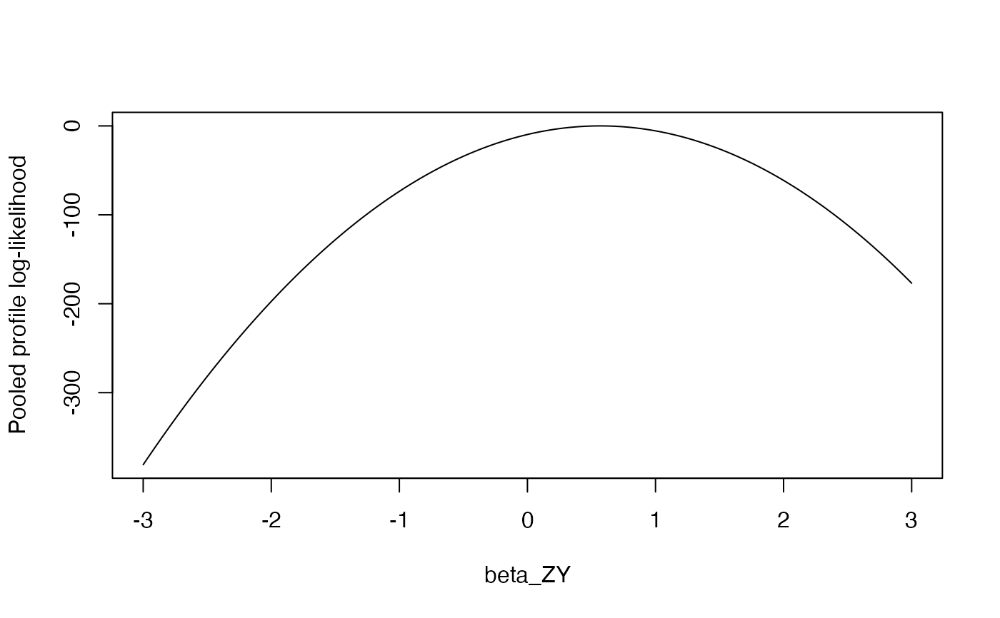

Federated one-shot likelihood pooling
poolLikelihoodProfiles.RdCombines profile log-likelihood vectors from multiple federated sites by pointwise summation. This is the core of the one-shot federated analysis: summing log-likelihoods is equivalent to multiplying likelihoods, yielding the joint likelihood under independence across sites.
Before summing, the function validates that all sites used identical beta grid vectors. If grids differ, spline interpolation to a common grid is applied with a warning.
Arguments
- siteProfileList
Named list of site profile objects, each the output of
fitOutcomeModel.- validateGridAlignment
Logical. If TRUE (default), checks that all sites used the same betaGrid and warns if interpolation is needed.
Value
A list with class "medusaCombinedProfile" containing:
- betaGrid
The common beta grid used for pooling.
- logLikProfile
Numeric vector of summed log-likelihood values.
- siteContributions
Data frame with siteId, nCases, nControls, and diagnostic flags per site.
- nSites
Number of sites pooled.
- totalCases
Total number of cases across sites.
- totalControls
Total number of controls across sites.
Details
Pool Profile Log-Likelihoods Across Sites
The pooling operation is mathematically straightforward: for each grid point \(b_k\), the combined log-likelihood is $$\ell_{combined}(b_k) = \sum_{s=1}^{S} \ell_s(b_k)$$ where \(\ell_s\) is the profile log-likelihood from site \(s\).
This pooling is exact (not an approximation) under the assumption that observations are independent across sites. No iterative communication protocol is needed — each site computes its profile once and shares only the numeric vector.
References
Luo, Y., et al. (2022). dPQL: a lossless distributed algorithm for generalized linear mixed model with application to privacy-preserving hospital profiling. Journal of the American Medical Informatics Association, 29(8), 1366-1373.
Examples
profiles <- simulateSiteProfiles(nSites = 3, trueBeta = 0.5)
combined <- poolLikelihoodProfiles(profiles)
#> Pooling profile likelihoods from 3 site(s)...
#> Pooling complete: 3 sites, 637 total cases, 5363 total controls.
plot(combined$betaGrid, combined$logLikProfile, type = "l",
xlab = "beta_ZY", ylab = "Pooled profile log-likelihood")
